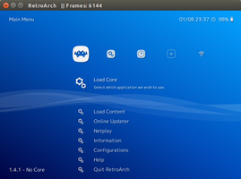
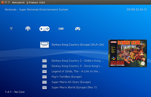

Retroarch
Dieser Artikel wurde für die folgenden Ubuntu-Versionen getestet:
Ubuntu 17.10 Artful Aardvark
Zum Verständnis dieses Artikels sind folgende Seiten hilfreich:
Retroarch  ist ein umfangreiches Frontend für viele bekannte Emulatoren. Die Besonderheit ist, das die Emulatoren, bei Retroarch "Cores" genannt, direkt von Retroarch geladen werden und mit diesem kommunizieren. Deswegen sind nur speziell für Retroarch kompilierte Emulatoren geeignet. Einer der vielen Vorteile ist, das z.B. ein Gamepad nur einmal eingerichtet werden muss und dann mit allen Emulatoren funktioniert. Eine nicht vollständige Übersicht über unterstützte Emulatoren und Konsolen:
ist ein umfangreiches Frontend für viele bekannte Emulatoren. Die Besonderheit ist, das die Emulatoren, bei Retroarch "Cores" genannt, direkt von Retroarch geladen werden und mit diesem kommunizieren. Deswegen sind nur speziell für Retroarch kompilierte Emulatoren geeignet. Einer der vielen Vorteile ist, das z.B. ein Gamepad nur einmal eingerichtet werden muss und dann mit allen Emulatoren funktioniert. Eine nicht vollständige Übersicht über unterstützte Emulatoren und Konsolen:
|  |
| Retroarch |
Visualboy Advance (Gameboy, Gameboy Color, Gameboy Advance)
Mednafen (Playstation, Gameboy Advance, SNES, Neo-Geo Pocket, Wonderswan, Virtualboy)
FCEU (NES)
Genesis Plus GX (Mega Drive, Game Gear)
Meteor (Gameboy Advance)
NEStopia (NES)
Snes9x (SNES)
bNES (NES)
bsnes (SNES)
Gambatte (Gameboy Color)
Desmume (Nintendo DS)
Yabause (Sega Saturn)
TGB Dual (Gameboy, Gameboy Color - jeweils mit "Link-Funktion")
PCSX Rearmed (Playstation)
Mupen64plus (Nintendo 64)
Snes9x Next (Super Nintendo)
MAME (Spielhallenautomaten)
Außerdem gibt es Cores für Quake und einige andere Spiele.
Installation¶
Zur Installation von Retroarch bieten sich zwei Möglichkeiten. Zum Einen kann das Programm seit Ubuntu 16.10 aus den offiziellen Paketquellen installiert werden. Je nach verwendeter Ubuntu Version steht ggf. nur eine ältere Version bereit. Zum Anderen kann Retroarch aus einer PPA Fremdquelle installiert werden, in welcher ggf. eine aktuellere Version des Programms bereit steht.
Zu beachten ist, dass bei beiden Installationsvarianten der "Core Updater" innerhalb des "Online Updater" nicht zur Verfügung steht. Die Installation von Cores erfolgt hier ausschließlich über die Paketverwaltung.
Paketquellen¶
Das Programm kann über das folgende Paket aus den offiziellen Ubuntu-Paketquellen installiert werden [1]:
retroarch (universe)
 mit apturl
mit apturl
Paketliste zum Kopieren:
sudo apt-get install retroarch
sudo aptitude install retroarch
Außerdem müssen die gewünschten Emulatoren, sprich Cores, einzeln installiert werden. Die Paketnamen beginnen mit libretro-... und sind selbsterklärend.
PPA (Fremdquelle)¶
Falls man eine aktuellere Version von Retroarch beziehen möchte, kann man das Programm über das PPA der Entwickler installieren [2].
Adresszeile zum Hinzufügen des PPAs:
ppa:libretro/stable
Hinweis!
Zusätzliche Fremdquellen können das System gefährden.
Ein PPA unterstützt nicht zwangsläufig alle Ubuntu-Versionen. Weitere Informationen sind der  PPA-Beschreibung des Eigentümers/Teams libretro zu entnehmen.
PPA-Beschreibung des Eigentümers/Teams libretro zu entnehmen.
Damit Pakete aus dem PPA genutzt werden können, müssen die Paketquellen neu eingelesen werden.
Nach dem Aktualisieren der Paketquellen kann folgendes Paket installiert [1] werden:
retroarch (ppa)
mit apturl
Paketliste zum Kopieren:
sudo apt-get install retroarch
sudo aptitude install retroarch
Außerdem müssen die gewünschten Emulatoren, sprich Cores, einzeln installiert werden. Die Paketnamen beginnen mit libretro-... und sind selbsterklärend.
Konfiguration¶
Die Konfiguration von Retroarch erfolgt über das Settings-Menu (Zahnrad-Icon zur Rechten).
Gamepad einrichten¶
Falls die Einrichtung des Gamepads oder Joysticks nicht automatisch erfolgt, so kann dieses über Settings -> "Input" -> "Input User 1 Binds" -> "User 1 Bind All" manuell gemappt werden.
Optimal sind Gamepads mit dem Aufbau der modernen Playstation-Controller: 1 digitales Steuerkreuz, 2 Analogsticks mit integrierten Tasten, 3 Schultertasten, 4 normale Tasten plus "Select" und "Start". All diese Tasten werden abgefragt.
Des Weiteren ist es sinnvoll, unter "Settings -> Input -> Menu Toggle Gamepad Combo" eine Gamepad-Tastenkombination auszuwählen, um auch ohne Tastatur aus einem Spiel heraus zurück ins Menu zu gelangen.
Tastenkürzel¶
| Tastenkürzel | |
| Taste(n) | Funktion |
| Esc | Retroarch beenden |
| F1 | Aus einem Spiel heraus ins Menü wechseln (und auch wieder zurück ins Spiel) |
| F2 | Einen Spielstand speichern (unabhängig von Spiel und Core!) |
| F4 | Einen Spielstand laden |
| F6 | Zwischen mehreren Spielstand-Dateien wechseln (runter) |
| F7 | Zwischen mehreren Spielstand-Dateien wechseln (hoch) |
| F | Wechsel zwischen Fenster- und Vollbild-Modus (Fullscreen) |
Firmware von Konsolen¶
Manche Emulatoren benötigen eine zusätzliche Firmware-Datei. Diese muss korrekt benannt sein und standardmäßig im gleichen Verzeichnis wie die zugehörigen ROMs liegen. Wer stattdessen lieber alle Firmware-Dateien in einem eigenen Verzeichnis ablegen möchte, kann dies unter "Settings -> Directory -> System/BIOS" konfigurieren.
| Firmware | |
| System | Firmware |
| Gameboy Advance | gba_bios.bin |
| NeoGeo | neogeo.zip |
| Playstation | Je nach Herkunft/Baureihe gibt es unterschiedliche Firmwares, z.B. scph5502.bin, die Zahl entsprechend anpassen. |
| Sega CD | Nach Herkunft verschieden: Europa: bios_CD_E.bin / Japan: bios_CD_J.bin / Amerika: bios_CD_U.bin |
Benutzung¶
Um ein Spiel zu spielen, reicht es:
unter "Load Core" einen Core auszuwählen (optionaler Schritt, beim Überspringen wird automatisch ein passender Core gesucht und gewählt)
dann unter "Load Content" das gewünschte Spiel auszusuchen
und mit "Load Archive" zu starten
Falls ein Spiel nicht funktionieren sollte, hat man ggf. mehrere Cores zur Auswahl. Ein extremes Beispiel ist der Super Nintendo mit einigen verschiedenen Cores. Alleine Bsnes bringt 3 Cores mit, die unterschiedliche Profile benutzen. Diese sind "performance" (schnell, aber ungenaue Emulation), "balanced" (deutlich langsamer aber genauer, empfohlen) und "accuracy" (anspruchsvolle und genaue Emulation für Härtefälle). Alternativ stellt auch der Snes9x Core eine gute Wahl dar.
|  |
| SNES Playlist mit Boxart Thumbnail |
Playlists erstellen¶
Eine wesentlich elegantere Art seine Spiele zu starten besteht darin, eine Playlists zu erstellt. Es wird dann im Menu für jede Konsole ein eigenes Icon angezeigt, unter dem man alle zugehörigen Spiele findet und starten kann. Hierzu muss man zunächst im Hauptmenu unter "Online Updater -> Update Databases" ein Update der Spieledatenbank durchführen. Dann im Import Content Menu (Icon mit dem Plus-Zeichen) anhand "Scan Directory" das Verzeichnis mit den ROMs scannen. Anschließend erscheint für jede Konsole ein eigenes Icon im Menu.
Um die Auswahl der jeweiligen Spiele noch schöner zu gestalten, können zugehörige Thumbnails angezeigt werden. Hierzu muss im Hauptmenu unter "Online Updater -> Thumbnails Updater" die jeweilige Konsole ausgewählt und aktualisiert werden. Anschließend wird in der Spieleliste ein Ingame-Screenshot neben dem Spielnamen angezeigt. Wenn man stattdessen lieber das Spielcover oder ein Hauptmenu-Screenshot anzeigen möchte, kann man dies unter "Settings -> User Interface -> Menu -> Thumbnails" anpassen.
Kommandozeilen-Nutzung¶
Um ein Spiel aus einem Terminal zu starten, müssen als Argumente der Core und das ROM übergeben werden. Ein Beispiel für das Starten aus einem Terminal heraus:
retroarch -L /usr/lib/x86_64-linux-gnu/libretro/bsnes_mercury_balanced_libretro.so ~/Roms/SNES/SuperNintendoRom.smc
Es gibt auch eine automatische Erkennung dazu, welcher Core genutzt werden kann. Bei dieser wird nicht der Core selbst angegeben, sondern nur das ROM.
retroarch ~/Roms/SNES/SuperNintendoRom.smc
In diesem Beispiel wird der erste Core verwendet, der Dateien mit der Endung .smc verarbeiten kann, egal ob es der beste oder schlechteste Core ist.
Nach diesem Vorbild können natürlich auch Programmstarter für ein bestimmtes Spiel angelegt werden. Diese Befehle sind ebenfalls geeignet, um mit XBMC und dem Addon RomCollectionBrowser die eigene Sammlung schick darzustellen und bequem zu starten.
Problembehebung¶
- Erstellt mit Inyoka
-
 2004 – 2017 ubuntuusers.de • Einige Rechte vorbehalten
2004 – 2017 ubuntuusers.de • Einige Rechte vorbehalten
Lizenz • Kontakt • Datenschutz • Impressum • Serverstatus -
Serverhousing gespendet von